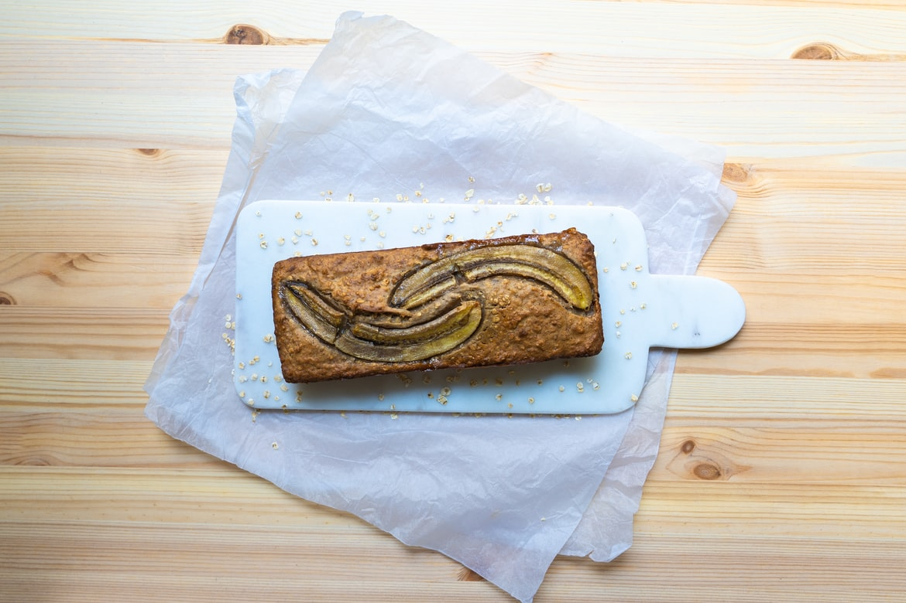

Home

A banana cake is a cake prepared using banana as a primary ingredient and typical cake ingredients.
It can be prepared in various manners, including as a layer cake, as muffins and as cupcakes. Steamed banana
cake is found in Chinese, Indonesian and Vietnamese cuisine. In the Philippines, the term "banana cake"
refers to banana bread introduced during the American colonial period of the Philippines.[4]
Ingredients
3 very ripe medium bananas (around 225g/8oz peeled weight)
3 large free-range eggs
100g/3½oz soft light brown sugar
150ml/5fl oz sunflower or vegetable oil
275g/9¾oz white self-raising flour
1 tsp ground mixed spice
1 tsp baking powder
Steps
Preheat the oven to 180C/160C Fan/Gas 4 and grease and line a 900g/2lb loaf tin with baking parchment or use a loaf tin liner.
Peel the bananas and mash with a fork. Tip into a large mixing bowl and add the eggs, sugar and oil. Use a fork or whisk to combine.
Add the flour, spice and baking powder and whisk together until thoroughly combined. Pour into the prepared tin. Bake for 40 minutes, or until the cake is well risen and a skewer inserted into the centre comes out clean.
Cool in the tin for 10 minutes, then turn out onto a wire rack. Serve warm or cold in slices. Spread with butter if you like.